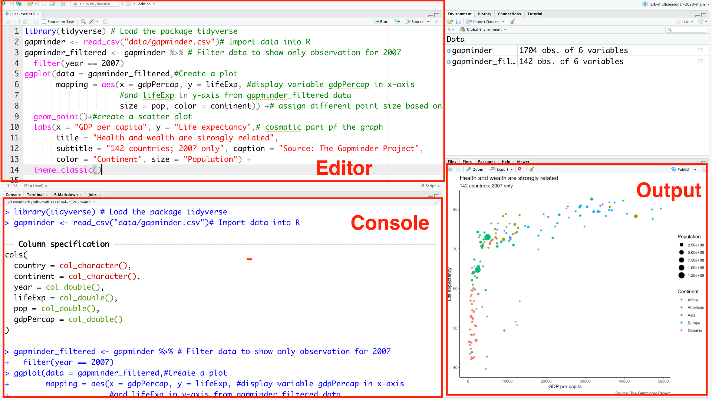

The first thing to note is that unlike other statistical software programs like Excel that provide point-and-click interfaces, R and Python are an interpreted language. This means you have to type in commands written in code. In other words, you have to code/program in R and Python.
Positron IDE
Learning R/Python
Learnign R/Python
I know that getting to grips with new software like R & Python can be a little daunting for some people
But rest assured, you will get there and it will be worth the effort!
Describe three main tasks in data analytics using R/Python and how to perform them
Describe three important things to know about R and Python
Install and load packages
Getting help
Three tasks in data analytics using R/Python
Writing codes
Producing & looking at outputs
Taking notes
1. Writing codes
Code
gapminder <-read_csv("data/gapminder.csv")# Import data into Rgapminder_filtered <- gapminder |># Filter data to show only observation for 2007filter(year ==2007)ggplot(data = gapminder_filtered,#Create a plotmapping =aes(x = gdpPercap, y = lifeExp, #display variable gdpPercap in x-axis #and lifeExp in y-axis from gapminder_filtered data size = pop, color = continent)) +# assign different point size based on population of countries and assign different colors to different countries geom_point()+#create a scatter plotlabs(x ="GDP per capita", y ="Life expectancy",# cosmatic part pf the graphtitle ="Health and wealth are strongly related",subtitle ="142 countries; 2007 only", caption ="Source: The Gapminder Project",color ="Continent", size ="Population") +theme_classic()
Note
Your code is a set of instructions you give to R/Python to produce something. You will write a lot of code to produce plots. You will also write code to load your data, and to look quickly at tables of that data. Sometimes you will want to summarize, rearrange, subset, or augment your data, or run a statistical model with it.
3. Taking notes
You will also be writing about what we are doing, and what your results mean. This is just in the form of plain text. When learning how to do something in ggplot, for instance, you will want to make notes to yourself about what you did, why you wrote it this way rather than that, or what this new concept, function, or instruction does. Later, when doing data analysis and making figures, you will be writing up reports.
This figure investigates the association between the GDP per capita and Life expectancy for all countries in the world. The figure shows that there is a strong relationship between GDP per capita and life expectancy. It means that health and welath are strongly related. Although the figure only shows the result for year \(2017\), but this remains valid for all years in the data set. you can change \(year == ....\) to investigate it.
Performing these 3 tasks using …
Console
Console pane is a place where you enter your code and run it.
Running a code means telling R/Python to perform an act by giving it commands in the console.
Once you open Positron, R/Python awaits your instructions at a command line of its own, denoted by the right angle bracket symbol, >.
When you type an instruction and hit Enter, the software interprets it and sends any resulting output back to the console.
✅ Use Console to experiment, to check your work or thoughts on how to solve a problem , or for quick help
❌ Using Console is not recommended for data analysis projects because whatever you type in Console will be forgotten once you close Rstudio, so you can not work on it later
❌ It is not only impractical, but also not adapted to working with projects which require more than a few lines of commands
❌ You can not take notes
❌ The 3 main tasks are not connected when using Console.
Performing these 3 tasks using …
Script Editor
An alternative to Console is to use an R/Python script editor that gives you more room to work.
The script editor is a great place to put code you care about.
You can keep experimenting in the console, but once you have written code that works and does what you want, put it in the script editor and save the file. This will allow you to work on it later.

Using script
Performing these 3 tasks using …
Script Editor
✅ You can have your code open and make comments or notes to yourself by starting a line with the hash character, #
✅ Suitable for any project , especially larger data analytics project
❌ Comment is only suitable for short notes and not to write your report
❌ To take note and write your report, you still need to use another tool such as Microsoft Word
❌ The 3 main tasks are not connected when using Console.
✅ It supports dozens of output formats, like PDFs, Word files, HTML, slideshows, power point, and more
✅ The 3 main tasks are connected when using Quarto
Performing these 3 tasks using …
Quarto
Quarto files are designed to be used in three ways:
For communicating to decision makers, who want to focus on the conclusions, not the code behind the analysis.
For collaborating with other data scientists/analysts (including future you!), who are interested in both conclusions, and how you reached them (i.e. the code, algorithm, etc).
As an environment in which to do data science, as a modern day lab notebook where you can capture not only what you did, but also what you were thinking.
Live Demo
Learning objectives
Understanding UI components of Positron
Create projects in Positron
Describe three main tasks in data analytics using R/Python and how to perform them
Describe three important things to know about R and Python
Install and load packages
Getting help
Three important things to know about R/Python
Here are some general points to bear in mind about how R/Python is designed. They might help you get a feel for how the language works.
Everything has a name
Everything is an object
You do things using functions
Three important things to know about R/Python
1. Everything has a name
Note
In R/Python, everything you deal with has a name. You refer to things by their names as you examine, use, or modify them. Named entities include variables, data that you have loaded, and functions that you use.
Names are case sensitive. The object my_data is not the same as the object My_Data.
When choosing names for things, be concise, consistent, and informative.
Follow the tidyverse style guide and name things in lower case, separating words with the underscore character, _, as needed.
You can combine multiple words in naming, e.g. word1_word2_word3.
Do not use spaces when naming things or typing names
Three important things to know about R/Python
2. Everything is an object
Whatever we name in R/python becomes an object. You create objects by assigning them to names as:
In R: object_name <- value
In Python: object_name = value
Note
when you create objects by assigning things to names, they come into existence in the software workspace or environment. Some objects are built in to R/Python, some are added via packages, and some are created by the user.
Three important things to know about R/Python
3. You do things using functions
You do almost everything using functions. Think of a function as a special kind of object that can perform actions for you. It produces output based on the input that it receives. When we want a function to do something for us, we call it by typing its name, e.g. sum().
sum(c(1,2,3)) # in Rsum([1,2,3]) # in Python
Three important things to know about R
3. You do things using functions
Functions can be recognised by the parentheses, () at the end of their names. This distinguishes them from other objects.
The parentheses are what allow us to send information to the function.
We call a function by typing its name followed by parentheses, and providing required inputs.
Three important things to know about R
3. What a function does?
We give the function some information, it acts on that information, and some results come out the other side.
Information is given to functions through arguments/inputs. Most functions accept one or more named arguments/inputs. e.g. functionname(argument1, argument2,…)
A function’s arguments are the things it needs to know in order to do something.
Functions take inputs via their arguments, do something, and return outputs which we call “values”. The value depends on what the function does.
Tip
Whenever you want to perform a task in R or Python, ask yourself: Which function in R or Python can I use to do this?
Where should I find functions?
When you install R/Python, you automatically get access to some base functions.
The code you write will be more or less complex depending on the task you want to accomplish. Therefore, functions available in base might not be enough for your project.
As with other programming languages, you will not have to do everything yourself.
Families of useful functions are bundled into packages that you can install, and load into your project, and make use of as you work.
You may also end up writing your own functions to produce the results that you need in larger projects.
Learning objectives
Understanding UI components of Positron
Create projects in Positron
Describe three main tasks in data analytics using R/Python and how to perform them
Describe three important things to know about R and Python
Install and load packages
Getting help
How to find packages for your project?
Every package has a name. The typical way of discovering packages is just by learning R/Python, in many tutorials and courses the most popular packages are usually mentioned.
R Packages are available in CRAN which is a network of servers. There are a huge number of packages available in CRAN, so the easiest way to find the one you want is to google “R package TOPIC”, e.g. R package visualisation! You might do simialr with Python.
Installing a package means bring the package from its server into your computer.
If the package is stable, then you can install it using one of the following options:
If the package is not stable, then you may need to install it from GitHub. We will cover this in later lectures, if required!
Once the package is installed, there is no need to reinstall it again. You can update them when needed.
Loading packages
Installing a package does not make it accessible for use in your project.
To use a package in your project, you need to load it. Each time you quit Positron and reopen it, you need to load packages.
Warning
If you run a code and get the error message “there is no package called …”, or similar in Python that might mean the package has not been loaded or installed. You’ll need to first check is loaded, if not install it, then load it.
Packages: R vs Python
R
Install: install.packages("tidyverse")
Load: library(tidyverse)
List: installed.packages()
Python (pip / venv)
Install: python -m pip install pandas
Load: import pandas as pd
List: python -m pip list
Learning objectives
Understanding UI components of Positron
Create projects in Positron
Describe three main tasks in data analytics using R/Python and how to perform them
Describe three important things to know about R and Python